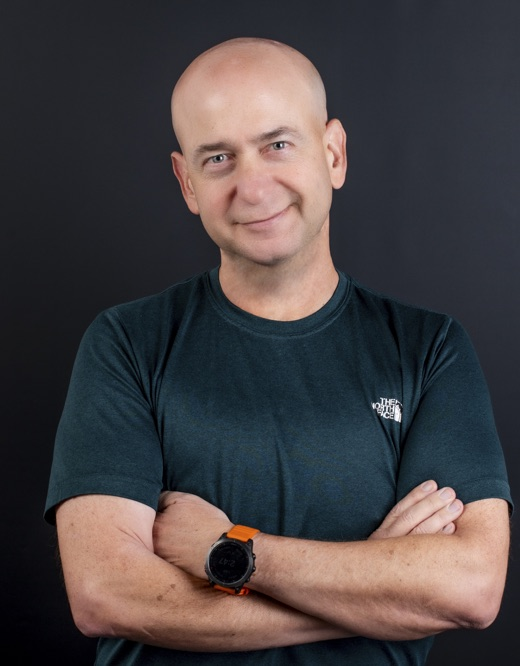

Wyler AI & Data Solutions
Eran Wyler
From vision to AI-driven reality.
- 25+ yearsbuilding and scaling products
- 6 US patentsgranted
- InfoGinfounded, acquired by Wix

01What I do
I help organizations design and deliver production-grade AI, data, and decision intelligence systems.
I have built and scaled products used by millions of people, working with Microsoft, AOL, Yahoo, Vodafone, KPN, Wix and other global companies. I founded InfoGin, which Wix acquired, and later led new product and revenue lines at Wix. I have spent over two decades turning "no" into "yes".
Today, through Wyler AI & Data Solutions, I work as a long-term architecture partner.
AI systems architecture
Production LLM systems, RAG pipelines, multi-agent orchestration, and domain-specific AI.
Data and decision intelligence
Predictive analytics, risk-scoring models, ML dashboards, and decision-support systems.
Product strategy
From vision and ideation through architecture and MVP to market scale.
Generative AI, NLP and knowledge systems
Personalization engines, graph-driven knowledge, and context-aware AI.
02Beyond business
I founded a nonprofit academy that trains women from marginalized communities to become professional web designers. The program mixes technical training with personal development. Forty women have become professional web designers through it.
I volunteered with the Israeli Medical Corps to build a platform for soldiers' well-being, nutrition and fitness, and a life-saving system for battlefield emergencies. It guides field teams to evacuate to the nearest suitable hospital for the type of injury, and alerts that hospital's staff to prepare. For this I received the Medal of Honor from Major General Roni Numa, Commander of the IDF Central Command.
03Experience
-
2020
CPO & Founder
Lynxi
An all-in-one content management platform for web designers, marketers and copywriters. It cut new-client onboarding time by a factor of five and opened a new revenue stream. I defined the vision, product, roadmap and business model, and brought customers in as advisory members to shape the platform.
-
2019 to now
Founder & Chairman
Tribe Studio Ltd.
A full-stack Wix design studio that employs graduates of the TEP Academy. It builds websites for small businesses across many industries, with ongoing training and a supportive community for its team.
-
2017 to now
Founder & Chairman
Tribe Empowerment Platform (nonprofit)
An academy that teaches women from marginalized communities, young women at risk and single mothers to become web design freelancers. The program is built on inspiration and mutual support. Forty women have become professional web designers.
-
2014 to 2019
Head of WixWiz Products
Wix
Started and ran a new line of products and services used by millions: Wix Marketplace, Get Feedback, the first phase of Wix ADI, DIFM, Promotional Quiz and others. Built data analysis products on user behavior, attrition, competitors and market trends, which helped Marketing double campaign ROI. Led a team of 16.
-
2000 to 2014
CEO, Head of Product Innovation & Founder
InfoGin Ltd. & InfoGin Inc.
A market pioneer named an innovative leader by Deloitte, Frost & Sullivan, KPMG, TheMarker and Globes, and acquired by Wix in 2014. InfoGin generated more than $32M in revenue, with deals and partnerships including Microsoft, AOL, Yahoo, InfoSpace, MapQuest, Orange, KPN, Vodafone, T-Mobile, Telefonica, Reliance, Bharti and AIS. Its Intelligent Mobile Platform served more than 100 million users.
-
1997 to 2000
Senior ASIC Engineer
ECI Telecom
Product manager and developer in video and telecommunications. Led a lossless compression ASIC at 155 Mb/s and SDH telecom ASICs from specification to production.
-
1996 to 1997
R&D Engineer
ORAD
Hardware infrastructure for video broadcasting. Designed and built the company's first broadcasting van.
-
1994 to 1996
R&D Manager
Giga Real-Time
Hardware and software consulting: a real-time graphics processing card for Scitex, defect detection down to 0.25 µm for Orbot Instruments, and a flat panel display project for Gur Optics that reached the market.
-
1990 to 1994
Military service, R&D
Israel Intelligence Corps, Unit 8200
Built software and hardware products from specification and algorithms to delivery. FPGA, EPLD, microprocessors and DSPs.
-
1986 to 1990
Founder & Owner
MegaSoft
From high school on, ran a software business building systems for customs agencies, stock management and small businesses.
04Patents
| Patent | Granted | Subject |
|---|---|---|
| US 7,047,033 | May 2006 | Automatic content adaptation: analyzing, processing and formatting web pages. |
| US 7,877,677 | Jan 2011 | Using web content on any type of device through a visual design tool, with no coding. |
| US 7,920,894 | Apr 2011 | Processing web content from many sources, not only server side, by user-selected importance. |
| US 8,140,111 | Mar 2012 | Generating a book-style document, with contents and index, from a website. |
| US 8,694,680 | Apr 2014 | Server-side emulation of scripts a handset cannot run. |
| US 8,739,027 | May 2014 | Template matching that keeps adapting a page correctly even when its structure changes. |
05Honors
- 2016
Medal of Honor
From Major General Roni Numa, Commander of the IDF Central Command.
- 2007
Globes 40 under 40
Named one of the 40 young managers moving the Israeli business market forward.
- 1998
Technology Excellence Award
ECI Telecom, for outstanding technology development.
06Education
- 1997 to 2000
B.Sc. studies, Electronic Engineering
Holon Institute of Technology, with a science teaching certificate. Paused in the third year to found InfoGin.
- 1988 to 1990
Practical Engineer, Electronics
ORT Braude College of Engineering, Karmiel. Final project completed in the Intelligence Corps.
07Contact
Have a problem worth solving with AI or data? Let's talk.